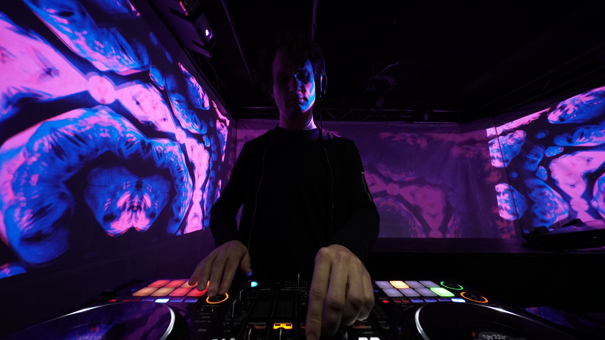

Keaton Shurilla
Electrical Engineer

▨▨▨ Curriculum Vitae ▧▧▧
Keaton Blue Shurilla is a masters student in Informatics at the University of Tsukuba, researching in the Digital Nature Group advised by Prof. Yoichi Ochiai. He also works as a research assistant for CYBERDYNE INC..
Previously, he earned a B.S. in Electrical Engineering from Brigham Young University with university honors. He was an undergraduate research student in Prof. Daniel Smalley’s Electro-Holography Lab.
In addition to his academic work, Keaton is a media artist, prolific DJ and producer of electronic music. He exploits obsolete hardware systems, such as retro sound ICs, to produce club-focused music.
Research
His research interests include holography, volumetric displays, human-computer interaction, integrated photonics, and calm technology. He approaches research from an integrated left–right brain perspective.
With his research, Keaton seeks to design a future that unlocks user’s creativity through seamlessly integrated next-gen media. His quest is to free users from the pixel prison of modern technology.
His current research focus is on guided-wave acousto-optic devices for holographic video.
News
| Aug 26, 2023 | Website initiated. |
|---|
Media
▩ 2022: FUTURES PIXIE DUST RADIO – Interview on Tokyo FM [recording]
▩ 2021: “BYU Capstone team creates world-champion educational device” [article]
▩ 2021: “Electrical Engineering: A Pathway to New Forms of Creativity” – individual highlight [article]
